Today's
Inbox
0 Tasks7-Day Completion Velocity
Volume of completed tasks over the past week.
Project Allocation
Distribution of completed milestones across workspace projects.
Break & Focus Adherence
Performance sync with today's scheduled recovery windows.
AI verification
Distraction Archive
Your saved distraction notes.
Choose your Cloud Bridge setup
Pick one way to set up the App Blocker and the bridge that turns it on and off.
Building the App Blocker
This macro monitors your device and immediately terminates distracting apps whenever tasks remain unfinished. Complete the checkpoints below.
Change which apps are blocked
- In MacroDroid → Macros, open your App Blocker macro.
- Tap its Application Launched/Closed trigger and choose Configure or Edit (wording varies by version).
- Keep Application Launched selected. Tick apps to add them, untick apps to remove them, confirm the selection and save the macro with the checkmark.
- When App Blocker is enabled, launch a selected app to check that it returns you to the home screen. A removed app should open normally.
Keep MacroDroid and the browser you use for Taskitator out of the blocked-app list so you can manage the setup. The Cloud Bridge does not choose or change blocked apps.
Open MacroDroid and tap the Macros tab on the bottom bar to open your macros list. Tap the floating + button (or select Add Macro from the home grid).
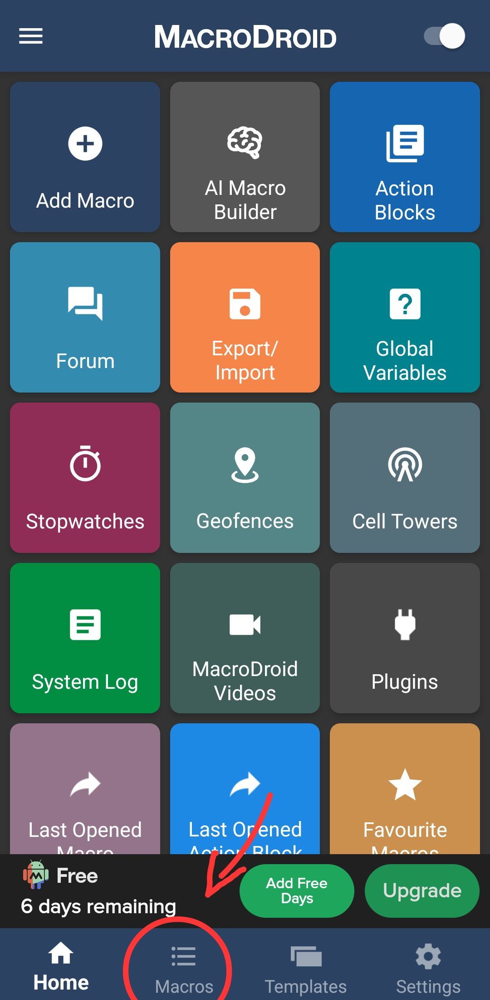
Fig 1: Tap Macros at the bottom bar to view and manage macros.Tap the top text field (#1) and enter the name App Blocker. Next, tap the + button on the red Triggers card (#2).
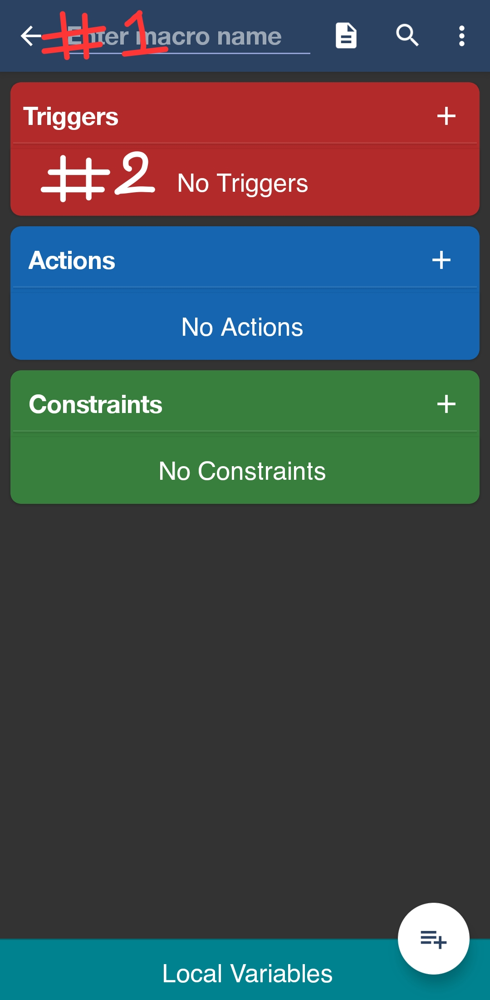
Fig 2: Enter App Blocker at (#1) and tap the red Triggers plus button at (#2).Select Applications → Application Launched/Closed. Choose Application Launched, then select all apps you want to restrict during work hours.
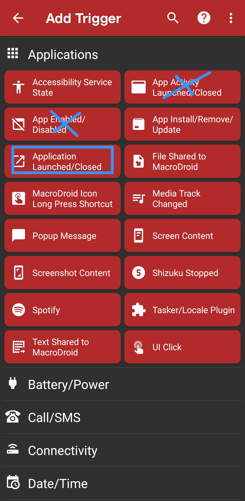
Fig 3: Tap Application Launched/Closed (ignore the crossed-out options).Tap the + button on the blue Actions card (#3) to add your block handlers.
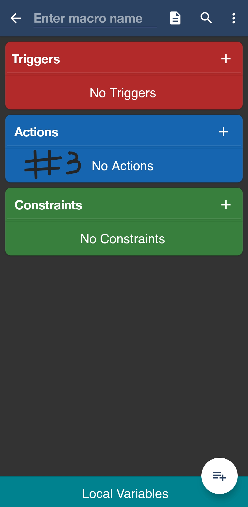
Fig 4: Tap the blue Actions plus button at (#3) to attach exit actions.The cleanest, most reliable way to kick yourself out of a blocked app without lag is the Launch Home Screen action. Search for launch home screen in the action search bar to locate it instantly.
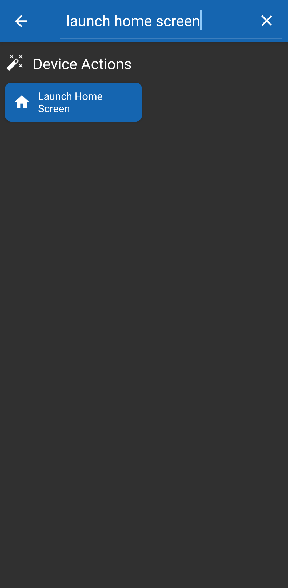
Fig 5: Under Device Actions, select Launch Home Screen.Review your complete action chain and commit the macro configuration.
• Device Actions → Launch Home Screen
• Notification → Display Pop-Up Message → "Tasks incomplete! Complete them first."
Import the macros
Two ready-made macros: App Blocker (blocks your chosen apps) and Taskitator Cloud Bridge (turns the App Blocker on and off from your tasks and Sleep Lock). Import the App Blocker first, then the Bridge. Do not rename the App Blocker; the Bridge finds it by that title.
↓ App Blocker ↓ Cloud Bridge (no token)
Faster: in Taskitator → Settings, create your phone token and press Download Bridge (with your token). That file already contains your token, so skip the token step below.
Install MacroDroid and find your way around
- Install MacroDroid from the Play Store and open it once. Grant the permissions it asks for (accessibility and notifications are needed for blocking).
- Import each macro (do this for both the App Blocker and the Cloud Bridge):
- Open MacroDroid and find the Import/Export section (in the side menu or the three-dots menu; the name varies slightly by version).
- Choose to import a macro, then locate the downloaded
.macroor.jsonfile (usually in your Downloads folder) and select it. - The macro opens for review. Press the three dots, then Save macro. The import is not complete until you save.
- Repeat for the second macro. Import the App Blocker first, then the Cloud Bridge.
- Open any macro from the Macros tab to see its triggers (red), actions (blue) and local variables (swipe up from the bottom). Save with the three-dots menu → Save macro.
1. App Blocker
- Import App_Blocker.macro. Default blocked apps: TikTok, Instagram, X (Twitter).
- To change the blocked apps, press the red Application Launched trigger and press Configure.
- Select Application Launched (leave the checkbox unchecked) and press OK.
- Choose Select Application(s) and press OK.
- Wait for the apps to load, then select every app you want blocked (you can search by name). Make sure Include is chosen, then press OK.
- Press the three dots, then Save macro. Save before closing, or the change is lost.
- Do not change the macro's title. The Bridge looks for "App Blocker".
2. Cloud Bridge
- Import the Bridge (the token-ready one from Settings, or the no-token one above).
- Only if you used the no-token file: swipe up the Local Variables drawer and select user token. Replace the value with your token from Taskitator → Settings. Tokens begin with
tkp_. Paste the token only, without the word "Bearer". - The Bridge checks every 5 minutes, when the screen turns on, and when MacroDroid opens. Keep these triggers.
- Make sure both macros are enabled. The Bridge then enables or disables the App Blocker for you.
| Server response | App Blocker |
|---|---|
device_locked = false | Off. Apps open normally. |
device_locked = true | On. Blocked apps return to the home screen. |
sleep = true | On (Sleep Lock). Overrides the line above. |
sleep = false | Follows device_locked. |
Working offline and syncing back
- The blocker follows the cloud, not your device. The Bridge reads your status from the Taskitator server. Tasks you complete while offline do not unlock your apps until this device reconnects and syncs.
- Edits merge automatically. When you reconnect, changes made on this device are merged with the cloud field by field (for example, a title edited here and a due date edited elsewhere both stay). Tags from both sides are kept.
- Only real clashes ask you. If the same field was changed differently on both sides, or a task was deleted on one side and edited on the other, a panel on this device asks you to pick This device or Cloud for each. Nothing is uploaded until you tap Save.
- Protected tasks are never forced. If the cloud refuses a change to a shielded or AI-checked task, only that task goes back to the cloud version and a message names it. Your other changes still sync. To keep such a change, turn on Emergency Bypass first.
- "Decide later" is safe. Your offline edits stay on this device and the blocker keeps following the last cloud state. The panel returns on the next sync.
- Phone token and macros need no changes. The token and the Bridge keep working the same way. Creating or disconnecting a phone token needs a connection.
Sleep Lock: there is no separate sleep macro. The same App Blocker is used for both task blocking and Sleep Lock. Emergency Bypass turns both off.
Not working?
- Import fails: update MacroDroid and pick the actual
.macrofile, not an HTML page. - 401 / Unauthorized: the token is wrong, empty or was replaced. Create a new one in Settings and download the Bridge again, or paste it into user token.
- UnknownHostException: a connection error. Check your internet.
- Bridge runs but nothing blocks: check the App Blocker is enabled, was imported before the Bridge, still has the title "App Blocker", and its trigger lists your apps.
Questions? Ask the Taskitator assistant or email info@mazendev.com. See also MacroDroid's import/export overview.
Building the Cloud Bridge
Manual alternative: build the Cloud Bridge from scratch with the checkpoints below. If you imported and configured the download above, skip this section; do not create a second bridge.
Access MacroDroid's global variable storage from the main menu.
 Ph2_S1: Main menu global variables tile
Ph2_S1: Main menu global variables tile
Create a dedicated string variable to hold Taskitator's lock status response text.
 Ph2_S2: Enter variable name and set type to String
Ph2_S2: Enter variable name and set type to String
Configure the polling interval so MacroDroid repeatedly checks the task server in the background.
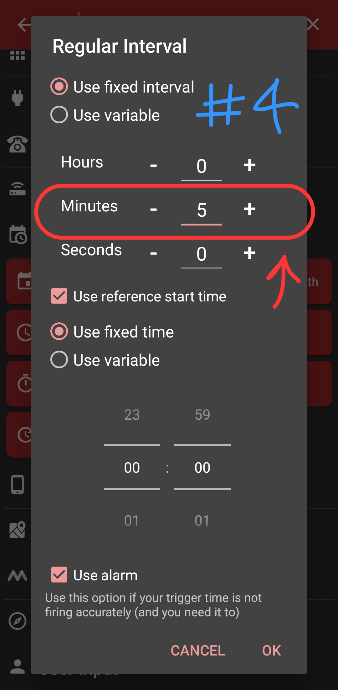
Ph2_S3: Configure 5 minutes regular intervalConfirm trigger configuration and proceed to the macro action sequence.
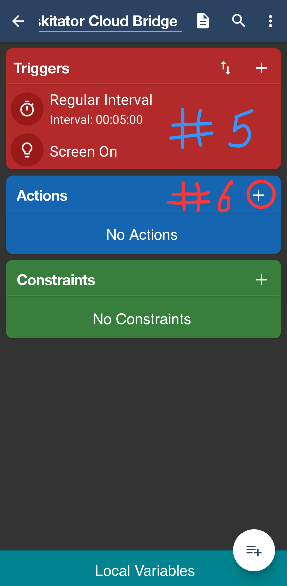
Ph2_S4: Confirm triggers and tap Actions plusLocate the web interaction action inside the MacroDroid library.
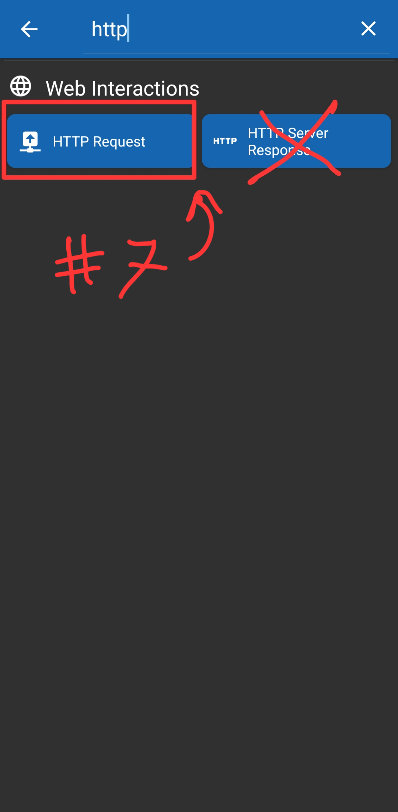
Ph2_S5: Search http and pick HTTP RequestSet up the endpoint details and enforce synchronous execution.
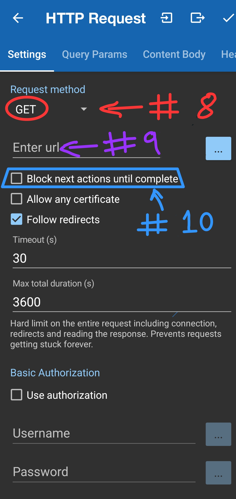
Ph2_S6: Set GET, paste URL, and check block until completeOpen the headers configuration tab inside the HTTP Request screen.
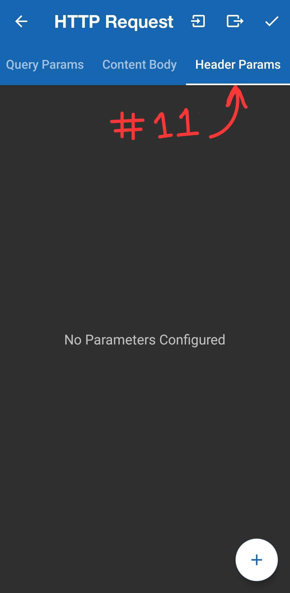
Ph2_S7: Tap Header Params tab and click +Add the Bearer token to authorize requests with your Taskitator sync engine.
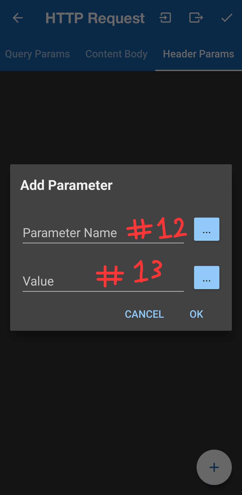
Ph2_S8: Enter Parameter Name and Token ValueCapture the HTTP response text into your global variable.
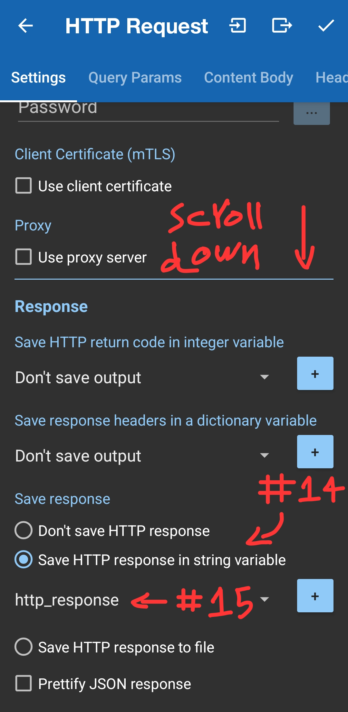
Ph2_S9: Check save to string variable and pick http_responseBegin the decision logic structure in the actions list.
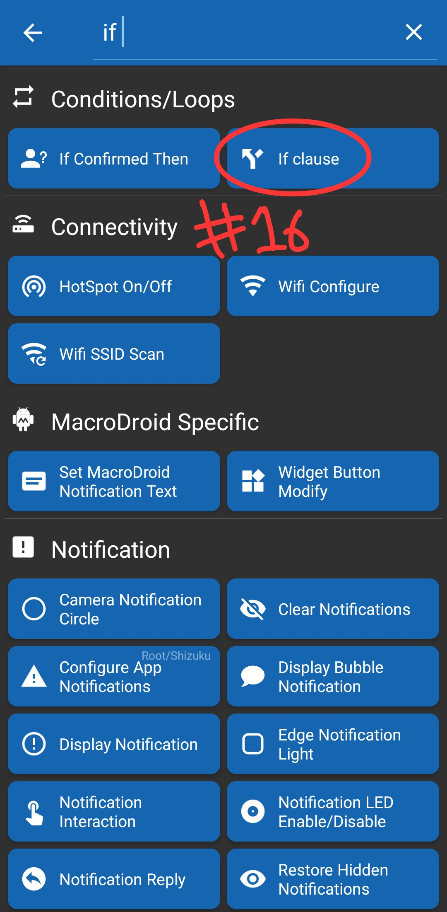
Ph2_S10: Conditions/Loops → If clauseAttach a variable comparison test to the condition statement.
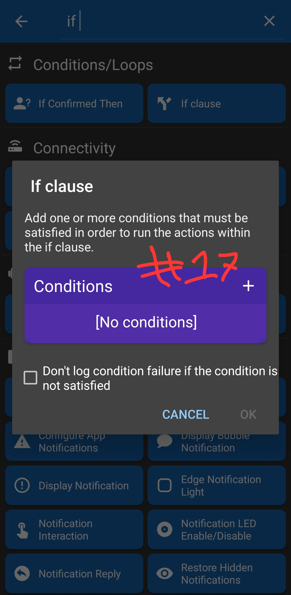
Ph2_S11: Tap plus inside Conditions boxChoose to test against a saved variable.
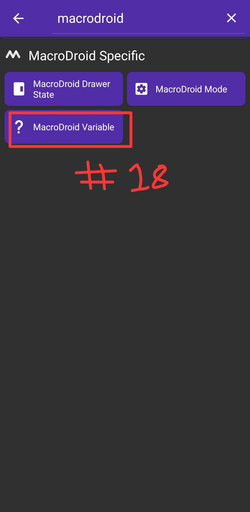
Ph2_S12: Select MacroDroid VariableCheck if the server explicitly confirmed the device is unlocked.
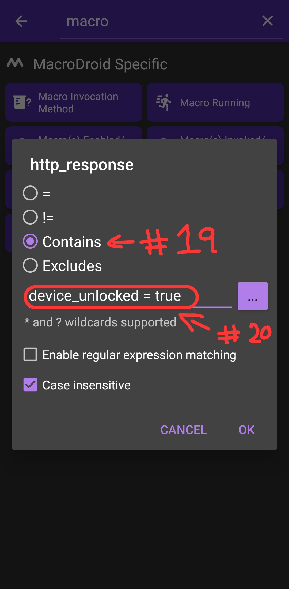
Ph2_S13: Set Contains device_locked = falseProvide the fallback branch for when tasks are unfinished.
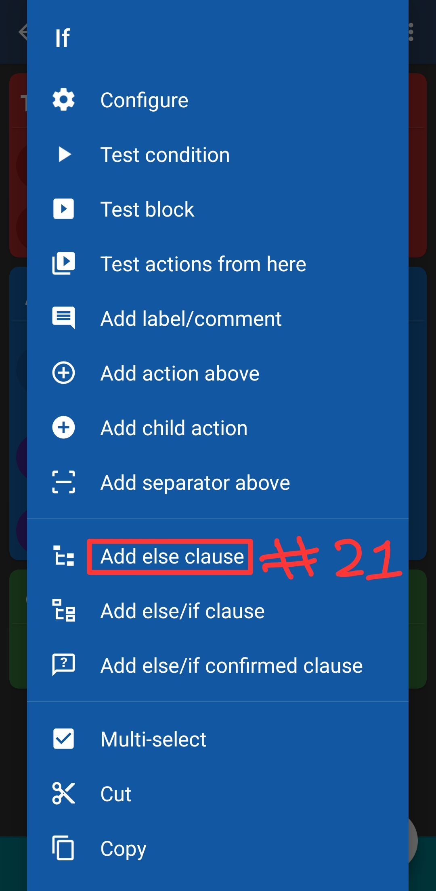
Ph2_S14: Context menu → Add else clauseGenerate the commands that toggle your App Blocker macro state.
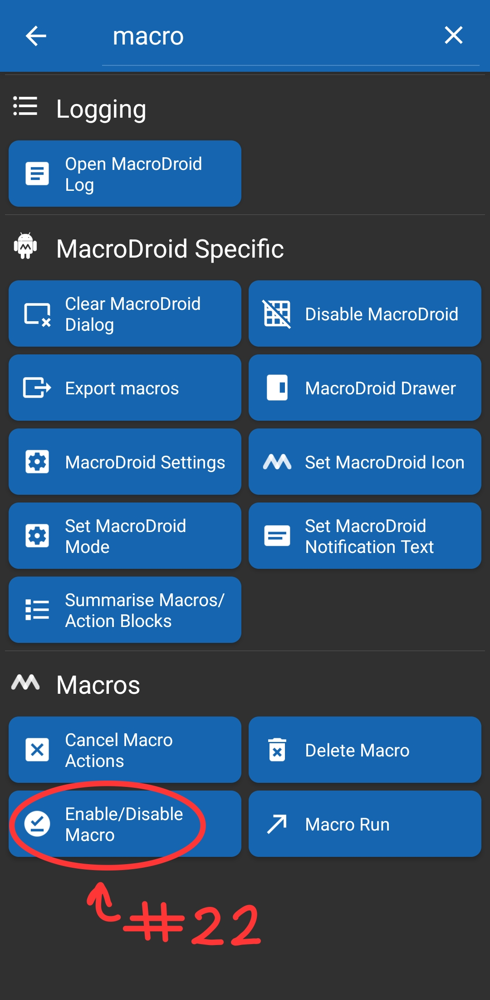
Ph2_S15: Select Enable/Disable MacroReposition newly created actions into their respective If / Else branches.
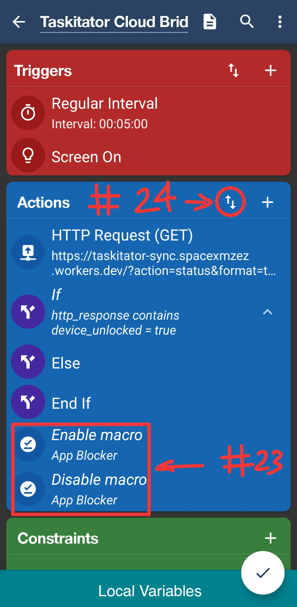
Ph2_S16: Tap the reorder arrows button (⇅)Nest the actions correctly inside the conditions and commit the macro.
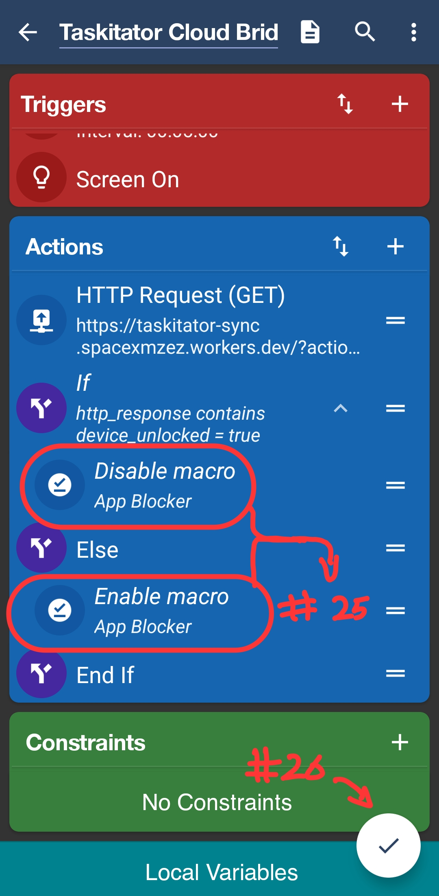
Ph2_S17: Final tree hierarchy and commit buttonStudy plans
See the plans created by study recurrence, change their names and priorities, add AI criteria, or delete them.
Unfinished study plans: new plans from the study recurrence dialog and unsaved edits of existing plans. Nothing here is created or applied until you restore it and save. Up to 10 drafts.
Previous plans
No study plans yet. Use the New study plan button to create one.
Sleep LockFirm
Sleep Lock settings
Set up MacroDroid first. Sleep Lock can’t block your phone until a phone token is connected. Create a token in Settings, then import the Cloud Bridge.
Your daily sleep schedule uses Riyadh time (UTC+3), even when you travel.
Delay sleep for today
Postpone your saved bedtime by 30 or 60 minutes, once per night across all devices. Wake-up time stays the same. An overnight schedule uses the date its bedtime starts, so midnight does not give you another delay. Other task locks still apply.
Firm mode: delays are only available until 2 hours before bedtime, so plan ahead. From then on, delaying needs an Emergency Bypass.
Loading saved schedule…
دليل المساعدة متاح باللغة الإنجليزية حاليًا. الترجمة العربية قادمة.
Taskitator Help
Step-by-step instructions for every feature. Try it live takes you to the real screen and fades out everything except the control you need.
Start here
Signing in, the main screen, plans, limits and this guide.
Help and tutorials
This page has step-by-step instructions for everything in Taskitator.
Find a section
- Use the index at the top: pick a unit, then a section. The section you jump to flashes briefly so you can see where it starts.
- ↑ Back to the index at the end of each unit returns you to the top.
Try it live
- Sections with Try it live take you to the real screen. Everything except the control you need fades out.
- Use the highlighted control. When you press it, the next part opens up for you to use (for example, pressing + New task unfades the whole Create Task panel).
- The card explains each step. Do it for me presses the highlighted control for you. – shrinks the card if it covers something.
- What you do during a live guide is real: a task you save is created, a task you complete is completed. Nothing is saved unless you press the app's own Save button.
- Skip tour stops the guide at any time. The last step offers Back to Help.
Guided tours
- Settings → General → Help & tutorials lists the short tours: Getting started, Breaks & emergencies, Set up AI, Link your phone, Taskitator Pro and Colour themes. Each shows New, Done or Skipped and can be replayed.
- A Universe tour runs inside each Universe (Settings tab → Replay Universe tutorial).
Inside the app
- A ? button next to an option explains it in place (Mr. Study uses !). Live guides point you to them instead of repeating them.
Sign in and create an account
- Open the site. The sign-in page shows Sign in and Create account. Use email and password or Google.
- After the first sign-in you see Set up your workspace:
- Start with an empty workspace for a new account.
- Import an older Taskitator account if you used Taskitator before the secure sign-in update: enter the old username and password once (this is an import, not another login). Pause your phone's blocking macro first, because its old token is replaced.
- Use another login switches to a different sign-in.
- A new account starts the Getting started tour automatically.
Loading screen
While Taskitator checks your sign-in you see Loading . . . (or Updating secure app files… after an update).
- After 10 seconds it adds Taking longer than usual….
- Skip and open offline at the bottom opens the copy saved on this device immediately. It only appears on a device that already holds your account.
- After 45 seconds Taskitator stops waiting by itself. With a saved copy it opens offline with a notice and a Reconnect button (reloads the page). Without one it shows "Taskitator couldn't connect…" with Try again.
- If you skipped an update, Taskitator never reconnects in place; when the connection is back the notice asks you to press Reconnect.
The main screen
Header (left to right): menu button, Completed (opens today's completed tasks; in General, all completed tasks), Breaks pill, Scratchpad, the sync dot (with an auto-sync countdown under it), Emergency bypass, a Today jump button (on views that need it), and Copilot.
Menu: Today, General Tasks, Calendar, Projects, Stats, Trash, Drafts, Universe, Sleep Lock, Study plans, Test lab, Help, Settings, and Recurring tasks (the history and list of repeating series). On wide screens (1,180 px and more) the menu becomes a permanent rail.
Floating controls: + New task, and the Focus timer button (shows the running clock).
Under the title: Multiselect, Pull from tomorrow (only when it applies), Filter, and the sort button (⇅).
Username
Tap Set username under the page title (it then shows @name). Use 3–20 letters, numbers or underscores. Names are unique and case-insensitive. The username is a display name; you still sign in with your login.
Install as an app
- Open Taskitator in your browser.
- Open the browser menu and choose Install app (desktop) or Add to Home screen (phone).
- Taskitator now opens in its own window from your home screen or app list.
Language
Settings → General → Language: English or العربية (Arabic). Changing it reloads the page.
- Arabic is right-to-left: the menu opens from the right, Copilot from the left.
- Time format: Automatic, 12-hour or 24-hour. Automatic uses 12-hour in Arabic.
- Dates are always Gregorian with Western digits.
- Your own text (task titles, tags, notes, project names, Copilot replies) is never translated.
- The Help page, Privacy Policy and Terms stay in English; Arabic shows a one-line notice.
- The language is saved on this device only.
Free and Pro
Everything is free unless the table says otherwise. Pro comes from a Keyo license key (Settings → AI & Pro → Activate Pro).
| Feature | Free | Pro |
|---|---|---|
| Tasks, subtasks, Shield, bonus tasks, Dynamic Priority, Dynamic Bonus, drafts, Early task | Yes | Yes |
| Projects, Calendar, Statistics, Trash, repeating tasks | Yes | Yes |
| Breaks, strict modes, Emergency Bypass, Scratchpad, Focus timer | Yes | Yes |
| Points, ranks and streak | Yes | Yes |
| Friends, leaderboard, cheers, duo streak | Yes | Yes |
| Collab (shared space with friends) | No | Yes, every member needs Pro |
| Phone lock (MacroDroid) and Sleep Lock | Yes, 3 phone devices | Yes, 12 phone devices |
| Backup, restore, sync, offline editing | Yes | Yes |
| AI with your own Gemini or Claude key (Copilot, criteria checks, proof reviews, note cleanup) | Yes, within 10 credits a day and 220 a calendar month (Riyadh time). Shown as Available / Caution / Critical, never as numbers | Yes, not limited or metered by Taskitator; your provider bills you |
| Hosted Taskitator AI (no key needed) | No | Yes, daily and 30-day allowance from the license |
| Test your criteria (single task) | Yes, costs AI usage | Yes, credit estimate first |
| Batch proof review (up to 20 tasks) | No | Yes |
Consecutive subtasks {num==X} and Auto create ranges | No | Yes |
| Study plans (create, edit, re-plan, import, Soft reschedule, Early Appearance) | No (existing plans: view, finish, delete) | Yes |
| Pull from tomorrow | No | Yes |
| Test lab | No | Yes |
| Colour themes | Savannah only | Savannah, Desert, Jungle, Marina, Fictional, plus Icon mix |
| Saved criteria | 5, of which 4 may have a reference file | 100, of which 10 may have a reference file |
| Universe | Join up to 2 | Join up to 7; create Universes (own up to 2); Context files; images in Community posts; Universe AI credits |
When Pro ends: the theme returns to Savannah with a one-time toast ("Pro ended, theme set to Savannah.") and the Icon mix is ignored (both are kept for renewal). Study plans can still be viewed, finished and deleted, but not edited. Only the first 3 phone devices keep working; the rest show as revoked until you renew. Existing Universes keep working; renaming, adding members and Context need the owner's active Pro.
Getting Pro
- Open Settings → AI & Pro.
- Have a Keyo license key? Enter it under Activate Pro here and press Activate Pro.
- No key yet? Press Want pro? Contact developer now! to email the developer.
- Compare Free and Pro → shows both plans side by side.
Hard limits
| Item | Limit |
|---|---|
| Tasks per account (synced) | 10,000 |
| Nesting depth | 64 levels |
| Title, description, criteria text | 10,000 characters each (criteria edits on locked tasks and study criteria: 4,000) |
| New-task drafts | 50 |
| Study plan drafts | 10 |
| Reference exemplar on a task | 1 file, 5 MB, image or PDF |
| Proof per review | 1–5 files; 8 MB per photo, 30 MB per PDF; 40 MB in total including reference files |
| Phone devices | Free 3, Pro 12 |
| Study plan | 1–1,000 units, up to 365 study days, bonus 1–500; imported plans up to 500 units and 2 MB |
| Auto create | 100 subtasks per entry; asks first above 20 |
| Universe | 20 members besides the owner; own 2; join 2 (Free) or 7 (Pro); proof files up to 3 per submission, 5 MiB each |
| Username | 3–20 letters, numbers or underscores; unique, case does not matter |
| Copilot name | 20 characters |
| Friends | 50 friends; 20 waiting requests; 30 requests a day; requests expire after 30 days |
Time rules
- Your day starts at the hour set in Settings → Day & week → New day begins at (00:00 to 04:00). Anything done before that hour counts toward the previous day, for tasks and breaks.
- Break days use your device's time zone, pinned for each day once the day is decided.
- Riyadh time (UTC+3) is used for: repeating-task dates, Sleep Lock schedules, Universe dates and deadlines, AI allowance resets (midnight), and the Free monthly allowance (1st of each month).
- Weekend (Settings → Day & week) decides when Emergency Bypass uses refill and the default study weekdays.
What needs an internet connection
Works offline (saved on this device, synced later): creating, editing, completing and deleting ordinary tasks; projects; drafts; scratchpad notes; the focus timer.
Needs a connection: anything that uses AI (Copilot, criteria checks, proof reviews, tests, note cleanup); creating or changing AI-locked tasks; submitting proof; breaks; Emergency Bypass; phone devices and tokens; Sleep Lock settings; Pro activation; Universe (it never queues offline changes as personal sync); importing or creating study plans (they need a successful sync first). Tasks completed offline do not unlock your phone until this device syncs.
Tasks
Creating, organising, completing and finding tasks. All free.
Today
Menu → Today: tasks due today or overdue.
- Undated tasks never appear. Give a task a date to commit to it.
- A dated task under a dated parent shows inside the parent, not twice.
- Early tasks and pulled study units appear as optional work; early study units without a parent due today appear under a header like "Plan 5.1" (the day after plan day 5).
- The overdue banner, Pull from tomorrow, filters (without the date filter) and sorting work here.
Show exampleHide example
Today shows Research with the path School › Biology above it. School and Biology do not appear. General Tasks still shows School.
General Tasks
Menu → General Tasks: every active task in its hierarchy, with due-date badges, filters, the date drop-down and sorting. Collapse a branch with its arrow.
Tasks: create and edit
Create
- Tap + New task.
- Task Title (required). Optional: Description, Project, Priority, Tags (+ Add), Due Date (starts as today when you create from Today), Repeat, Shield, Count toward phone lock (Normal mode), Bonus, Dynamic options, AI proof, Quick Subtasks.
- Save Task, or Draft, or Cancel / ✕.
Edit: tap a task to open Task Details, change fields, then Save Changes. Nothing applies until you save. Task Details adds: Hierarchy / Parent Task, Assign to today (undated AI tasks), Early task, the AI Audit card (Inherit criteria from a sibling, Edit criteria, reference file), the subtask list, Delete Task and Draft.
Delete: ✕ on the row or Delete Task → the task and its subtasks go to Trash. AI-locked branches and shielded tasks with unfinished subtasks need Emergency Bypass.
Show exampleHide example
Completing, reopening and the 10-second undo
- Tap a task's circle. The task and all its subtasks complete. A sound plays (if on) and Undo shows for 10 seconds.
- Top-level task: its unfinished subtasks that are not protected move to Trash. Bonus, AI-audited and shielded work (and anything leading to it) stays. Reopening the task brings the trashed ones back.
- A completed top-level task can be reopened until its day ends. After that it and its branch disappear from task views (Statistics still count it).
- Blocked when a Shield has unfinished required work, or an AI-audited task under it is unfinished.
- AI-locked tasks open the proof dialog instead.
- Tap a completed task's circle to reopen it (AI-locked tasks need Emergency Bypass).
- In Task Details a completed task can only have its title and description edited.
Points, ranks and streak
Completing tasks earns points and keeps a daily streak. Free for everyone. The strip above your Today list shows your streak (flame), rank and progress; tap it for details.
How points are earned
- Complete a task (tap its circle). Points count on the day you complete it, not its due date, so early, overdue and General-list completions all count.
- Your highest priority gives 5 points and your lowest 1, evenly spaced and rounded (3 levels: 5 / 3 / 1; 10 levels: 5, 5, 4, 4, 3, 3, 2, 2, 1, 1). With one level every task gives 3. A task without a priority gives 1. Dynamic Priority doesn't change it.
- Points arrive when Taskitator syncs (about 15 seconds later). A toast shows +N points, a new rank or a new streak.
Rules
- Only the task you tap counts. Subtasks completed together with their parent earn nothing.
- Each task earns once. Reopening and completing it again adds nothing.
- At most 150 points a day.
- Tasks completed offline count when you sync, for up to 7 days.
- Points are kept on Taskitator's server, so restoring a backup, clearing completed tasks or reopening tasks never removes them.
Ranks: Seedling (0), Sprout (15), Sapling (40), Scout (90), Tracker (180), Ranger (350), Hunter (650), Pathfinder (1,100), Warden (1,800), Alpha (3,000), Apex (5,000), Legend (8,000).
Streak
- Finish at least one task before your day ends (Settings → Day & week → New day begins at) and the streak grows by one.
- Miss a day and it goes back to 0. Your best streak is kept.
- Today doesn't break it until the day is over.
Free days
- Settings → Day & week → Streak free days. Your weekend is selected until you change it.
- Tick the days. You can choose up to your weekend days plus 2.
- Press Save changes. The change starts next week (the day after your weekend), so today can't be made free after you've missed it.
On a free day, not finishing a task doesn't break your streak, and completing tasks adds no points and no streak day.
Make today required
- On a free day, tap the points strip and press Make today required.
- Confirm. Taskitator syncs first, then today becomes a normal day: tasks you finish from now on earn points and count toward your streak, and finishing none breaks it tonight.
- Tasks you already finished today don't count, even if you reopen and finish them again. It can't be undone. Next week's free days stay free.
Streak counting
- Settings → Day & week → Streak counting.
- Loose (default): any finished task keeps your streak, bonus tasks included.
- Normal: only required (non-bonus) tasks keep it.
- Tight: only AI-locked tasks keep it.
- Points always count every task. A change starts next week, after your weekend.
Friends
Add other Taskitator users as friends to compare points and keep each other going. Free. Friends never see your tasks, only your points, rank, streak, this week's points and whether you've finished a task today. Friendship has nothing to do with Universe. Needs a connection.
Add a friend
- Menu → Friends.
- You need a username first (Set username), so people know who the request is from.
- Type your friend's exact username (capitals don't matter) and press Send request. There is no search by part of a name.
- They see it under Requests and press Accept, Decline or Block. If they had already sent you a request, yours accepts it.
- From a Universe: open the Universe's member list and press Add friend next to a member who has a username.
Manage requests
- Withdraw cancels a request you sent.
- Declining is silent: the sender keeps seeing "Pending" until the request expires after 30 days.
- A red number next to Friends in the menu counts requests waiting for you.
Leaderboard and friends
- Leaderboard ranks you and your friends by All time points or This week (the week starts the day after your weekend).
- Each friend shows their rank, points, streak (lit flame = finished a task today) and Done today or Not yet today.
- Duo streak: days in a row you both finished at least one task. A day either of you marked free is skipped.
- Cheer: once a day per friend. They get a "cheered you on" notice the next time they open Taskitator.
Unfriend and block
- Unfriend ends the friendship for both of you. Either of you can send a new request later.
- Block ends the friendship, cancels requests both ways, and silently drops their future requests: they see "Pending", you see nothing. Unblock under Privacy → Blocked. You must unblock someone before sending them a request.
Privacy: who can send you requests: Anyone who knows my username (default), Only people in my Universes, or Nobody. A refused request looks sent to the other person.
Limits: 50 friends, 20 requests waiting at once, 30 requests a day.
Subtasks
- Quick Subtasks (Create Task) or Subtasks Under This Task (Task Details): type and press Enter or +.
$$marks bonus. + Add Subtask opens a full form for one. - Sort (A to Z, By priority, Required first then priority, Default order) is applied once; Arrange lets you order them with arrows. Subtasks added later go to the end.
- Hierarchy / Parent Task → Change opens a parent picker with its own filters and sort; subtasks move with their parent. You can't move a task into its own subtask; shielded tasks stay under their parent.
- On Today, a dated subtask under undated parents shows alone with a small path above it (e.g. School › Biology).
Shield (Require all subtasks first)
Tick Require all subtasks first (Irreversible Shield). The task can't be completed until every required (non-bonus) task under it is finished.
- It can't be turned off.
- A shielded task can't be moved out of its parent, and its required work can't become bonus.
- A shielded task with unfinished subtasks can't be deleted without Emergency Bypass.
- Completing a top-level task never trashes shielded work.
Show exampleHide example
You can complete Finish report once Draft and Edit are done, even if the cover page is not.
Bonus tasks
Optional work. A bonus task never blocks its parent, even under a Shield.
- Tick Bonus Subtask (Excluded from Shield) in the editor, or start a quick subtask's text with or include
$$(removed from the title). - Change many at once: Multiselect → Bonus → Make bonus or Make required. Tasks that can't change are skipped.
- An AI-audited task can't be bonus. Required work protected by a Shield can't become bonus.
- Phone lock: bonus tasks count only when Count bonus tasks is on (Harsh or Normal); never in Limited.
Dynamic options (Dynamic Priority, Dynamic Bonus)
In the editor, Dynamic options (? explains both).
- Dynamic Priority (free): choose a level under "While no unfinished required work remains, use priority". The task uses it while no required subtask is unfinished (a task without subtasks uses it at once) and returns to its own priority when required work becomes unfinished. The stored priority never changes.
- Dynamic Bonus: the task becomes bonus work once all its required subtasks are done. It can't be combined with Bonus or AI audit, and can't be turned on once a Shield protects the task (turning it off is free). Saving it on a task without required subtasks asks first, because it would never apply. New study-plan days have it on.
Show exampleHide example
Early task
Show a task on an earlier day as optional work. Free.
- Task Details → Early task → pick a date → Save. Remove clears it.
- Many at once: Multiselect → Due → tick Show early as bonus (keep due date), or Remove early date from selected.
- The date must be before the due date (own or inherited) and not in the past. Only active, non-repeating tasks.
- The due date doesn't change. Finish it early and it's done; skip it and it stays due on its date. Shields, locks and AI checks still apply.
Drafts (tasks)
Park an unfinished task. A draft is not a task: not on Today, not overdue, no phone lock.
- New task: fill in what you have (only the title is required) and press Draft. Nothing is created or locked and no AI is used.
- Menu → Drafts: Open refills the form; Delete removes it. Save Task on an opened draft publishes it and removes the draft; Draft again updates it.
- Existing task: Task Details → Draft keeps your edits without changing the task. Next time you open the task a notice offers Restore or Discard draft. Save Changes removes the draft. Restoring only fills fields you may change.
- Drafts sync and are in backups. Up to 50 new-task drafts.
- Stored: title, description, due date, project, priority, tags, bonus, Shield, AI proof choice, criteria text, Mr. Study fields, Dynamic Priority choice and typed subtasks. Not stored: reference file, validation score, repeat schedule. Edit drafts don't include subtask changes.
Show exampleHide example
Multiselect and batch actions
- Tap Multiselect and tick tasks (Select all ticks everything shown).
- Choose an action:
- Tags: replaces the tags of every selected task.
- Priority: one level for all.
- Due: one date for all; overdue AI-locked tasks are protected from postponement. Also the Early task options.
- Bonus: Make bonus or Make required.
- Phone lock: Count or Don't count (only when Allow changing many tasks at once is on in Settings → Tasks). Unchecking today's tasks is skipped while locked.
- Delete: shows Apply · delete N; nothing is deleted until you press it. Protected tasks are skipped.
- Batch review selected tasks (Pro).
- The selection clears after an action; selection mode stays on until you tap Multiselect again.
Show exampleHide example
Filter, sort and date filter
- Filter → choose Projects, Priorities, Tags and Date (Any date, Overdue, Today, Next 7 days, No date, Custom range), and Match: AND (all) or OR (any). Apply Filters; Clear All resets. Parents of matches stay visible. The date filter doesn't apply on Today.
- The date drop-down above General and Projects lists filters by effective due date (own or inherited; early tasks also match their early date).
- ⇅ sorts by Priority, Alphabetical or Required, then priority. Saved on this device.
- Numbers in titles sort as numbers (Chapter 2 before Chapter 10). A leading label like
5.10or5.1-0-1is read as numbers segment by segment.
Show exampleHide example
Overdue tasks
The banner on Today counts overdue tasks.
- Tap Reschedule to date….
- Pick Target Due Date (today or later) → Reschedule Tasks. Eligible, non-locked overdue tasks move.
If AI-checked tasks are overdue, ordinary rescheduling is blocked and the button becomes Bring AI Tasks to Today. Study plans with overdue units are handled on the Study plans page (link in the dialog; their names show in red).
Show exampleHide example
Projects
Menu → Projects. Every account has an Inbox.
- The + chip creates a project: name, icon (emoji) and theme colour → Save Project.
- Tap a chip to open that project: its tasks in hierarchy, the date drop-down and + New task (created in this project).
- ✎ edits the active project (not the Inbox). Delete Project asks what happens to its tasks: divert to Inbox, reassign to another project, or delete them all.
Show exampleHide example
Priorities and tags
Settings → Tasks.
- Tags: type and + Add; remove with ✕. Used in the editor and filters.
- Priorities: + Add level, rename, colour, reorder with arrows (#1 is highest), delete. A task's ring and animal take its priority colour.
- Task checks: Check criteria before locking (AI must rate criteria 7/10 before a task can lock).
- Press Save changes.
Recurring tasks
Make a task and its subtasks come back.
Set up
- Create New Task → Repeat, or Task Details → Set up recurrence (active tasks only).
- Schedules: Daily, Selected weekdays, Monthly (start-date day), Date of month (1–31), Every six months, Yearly. Start date and optional End date.
How it repeats
- The next occurrence is created when the current one is completed or deleted, not when it becomes overdue. Its date is the next scheduled date after the latest of: the current due date, the day you finished it, today. Missed days don't pile up.
- Subtasks repeat with their parent (dated subtasks keep their offset). A repeating branch can't contain another repeating series, and a child must stay inside its branch.
- Apply ordinary task edits to: This occurrence, or This and future occurrences. Due-date changes apply to this occurrence only.
- Recurrence & future criteria changes future dates, proof criteria (needs 7/10) and reference files; the current occurrence keeps its requirements.
- Stop future repetition: you can still finish the current task. The series also stops at its end date or when its parent is completed or removed.
Overview: menu → Recurring tasks lists the series and the history of the latest 500 occurrences.
Show exampleHide example
Calendar
Menu → Calendar.
- Month grid with ‹ › to change month and Today to jump back. Tap a date to list its tasks in Agenda.
- Tap a task to open it. Tasks can't be completed from the calendar; complete them in Today or General.
- Early tasks show Early · due {date}.
- Unscheduled Tasks lists undated tasks with Assign to Today.
Show exampleHide example
Statistics
Menu → Stats.
- Done Today, Pending Today, Rigor Ratio (AI-verified share of all completed tasks), Active Total.
- 7-Day Completion Velocity, Project Allocation, Break & Focus Adherence, AI verification (AI Verified vs Standard Done).
- Distraction Archive: extracted scratchpad notes (cleaned text, View raw original, delete one, Clear Archive).
Trash
Menu → Trash.
- Restore brings back a task and its trashed subtasks. If its parent is gone or trashed, it becomes top-level.
- Delete Forever removes it and its subtasks permanently; Empty trash removes everything.
- Settings → Account & data → Clear completed & trash permanently deletes finished and trashed tasks and their reference files.
Focus, breaks and your phone
Breaks, emergencies, distractions and blocking apps.
Breaks
Tap the Breaks pill. You get one daily allowance (3 hours by default) shared by two systems. Each day uses only one system; choosing one locks the other until the day resets. While a break runs your tasks don't lock your phone; Sleep Lock is not lifted by breaks. A break never continues into the next day. Each system has a ? help panel.
Scheduled
- Press Start planning. You get a 10-minute planning window from that moment. It can be started until 6 hours before the day resets.
- + Add Break: up to 3 breaks with start and end times, not overlapping, within the allowance.
- Press Save schedule. Saved minutes come off the allowance at once. You can edit and save again until the window ends; then the last save is final. Closing without saving cancels the window.
- Lock Scheduled for Today commits the day to Scheduled without planning.
Reserved breaks (part of Scheduled): + Add Reserved in the same planning window, at most 2 a day. Each has a length (10 minutes or more, in 5-minute steps) and a start window (at least 5 minutes wide, inside today, not over, not overlapping a scheduled break or another window). The full length is taken from the allowance when you save. When the window opens, Start now appears; the break then runs its full length and can't be ended early. If the window passes unused, that time is gone. A scheduled break that begins during it cuts it off; the rest is lost.
Flexible
- Choose 30 min, 45 min, 1 hour, Custom (whole minutes from 10 up to what is left) or Until allowance ends.
- It starts immediately. You need at least 10 minutes of allowance and 10 minutes before the day resets. One break at a time.
- It can't be ended in its first 10 minutes (or your strict minimum). After that press End break, or let it stop at its length, when the allowance runs out, or at the day reset.
Every started minute counts in full (30 min 1 s = 31 minutes).
Break limits & strict modes (Settings → Day & week)
- Daily break maximum: 1 to 3 hours in 15-minute steps.
- Flexible Strict Mode: minimum length 30–60 minutes (never above the maximum); shorter presets disappear; the same gap must pass between one break's end and the next start. A warning shows if this leaves very few breaks.
- Scheduled Strict Mode: if you haven't chosen a system by the Deadline (1 to 18 hours after day start, 15-minute steps), Scheduled locks with that weekday's plan: the Default plan, Its own plan, or Not covered (normal rules). A covered day without a plan means zero breaks. The deadline applies even if the app is closed.
- These settings can only be changed when today's required (non-bonus) tasks are done or Emergency Bypass is on. If today's system is already chosen, changes apply from tomorrow. Press Save break settings.
The pill shows the state: Breaks, Plan (countdown), On break · minutes left, Next scheduled break at…, Scheduled Breaks locked for today. Its colour follows the remaining allowance (green above 35 %, yellow 10–35 %, red below).
Show exampleHide example
Emergency Bypass
For real emergencies. Tap Emergency bypass → Activate 15m.
- Lasts 15 minutes. 4 uses a week; they refill at 00:00 on the day after your weekend ends.
- While active: edit or delete protected tasks; change their criteria (including weaker edits); test criteria on locked tasks; change an AI task's title or remove its date; reopen AI-locked tasks; loosen phone-lock settings; change break settings; move or rename AI-audited study units. Your phone unlocks and Sleep Lock lifts.
- It never ends a break or changes your break allowance.
- Deleting a study plan with AI criteria uses 2 uses.
- The header shows "Emergency Mode Active" with a countdown. It needs a connection.
Show exampleHide example
Scratchpad (Distraction Dump)
Park a distracting thought.
- Tap Scratchpad. A timer starts (90 s by default; 30 s–5 min in Settings → General → Distraction note timer).
- Type, then Dump & Return. It also saves when the timer ends.
Notes expire after 48 hours. View notes stays locked until required tasks due today or overdue are completed, moved or trashed. In the notes view you can title each note, Extract All (AI cleans spelling and grammar, generates missing titles, downloads .txt or .md, and moves the notes to the Distraction Archive on Stats; needs AI), Delete All, or + New Dump. The Focus timer has a Scratchpad button that returns you to the timer.
Show exampleHide example
Focus timer
Tap the timer button.
- Timer settings: Study minutes (1–90), Break minutes (1–15), Large break minutes (1–35), Sessions before large break (1–4), Sound, Vibration, Keep screen awake, Volume.
- Start timer. It runs Study → Break → … → Large break, then shows "Sessions complete".
- While running: Pause/Resume, End timer, Restart, ⛶ Full screen (phones turn landscape), Scratchpad, Floating timer (picture-in-picture, in browsers that support it; keep the tab open).
It keeps running when you switch pages and is saved per account on this device. Tap a timer button once to allow sound. It has nothing to do with breaks or the phone lock.
Day & week settings
Settings → Day & week: New day begins at (00:00–04:00), Weekend starts and Weekend ends, the Emergency Bypass counter ("4 of 4 left this week"), Streak free days, and Break limits & strict modes. These need Save changes (break settings have their own Save button).
Phone lock (MacroDroid)
Android only. MacroDroid blocks chosen apps while today's tasks are unfinished. Taskitator is not affiliated with MacroDroid, and using MacroDroid is still subject to its own limits and terms.
Set up (once)
- Settings → Phone lock → Open guide (or menu → phone blocker guide).
- In Devices, type a device name → Add device. Its token starts with
tkp_. - Download Bridge (with your token) and Download App Blocker.
- In MacroDroid: Import/Export → import the App Blocker first, then the Bridge; open each, three dots → Save macro. Grant accessibility and notification permissions.
- Choose blocked apps in the App Blocker's Application Launched trigger (defaults: TikTok, Instagram, X). Never block the dialer, SMS, Android Settings, MacroDroid or the browser you use for Taskitator.
- Don't rename "App Blocker"; the Bridge finds it by name. Keep both macros enabled.
No-token Bridge: open its Local Variables, set user token to your token (without "Bearer"). Manual build: the guide's step-by-step checklist (HTTP GET to the Status URL, header Authorization: Bearer <token>, If response contains device_locked = false → disable App Blocker, else enable).
How it decides
- The Bridge checks every 5 minutes, when the screen turns on and when MacroDroid opens.
- Locked while counted tasks due today or overdue are unfinished. Unlocked during a break, while Emergency Bypass is on, or when everything counted is done. Eligible Universe assignments can also lock it (with your consent).
- Sleep Lock is reported separately and overrides "unlocked".
- Tasks with no due date never count. A subtask uses its nearest dated parent's date.
Phone lock counting (Settings → Tasks)
- Harsh (default): every task due today counts. Bonus tasks count only with Count bonus tasks on.
- Normal: only tasks with Count toward phone lock ticked count. New required tasks start ticked; new bonus tasks start ticked only with Count bonus tasks on.
- Limited: only AI-locked tasks count. Bonus never counts.
- AI-locked tasks always count.
- Loosening is locked until today's tasks are finished or Emergency Bypass is on (breaks don't unlock it): a looser mode, turning Count bonus tasks off, unticking today's tasks, removing or moving counted bonus work, or turning counted required work into bonus. Tightening is always allowed.
Device changes (add, remove, Remove all devices) are only allowed when today's tasks are done, during a break, or with Emergency Bypass. Free: 3 devices; Pro: 12.
Troubleshooting: import fails → update MacroDroid and pick the real .macro file. 401 → wrong or replaced token; add a device again. UnknownHostException → no internet. Nothing blocks → App Blocker enabled, imported first, original name, apps listed.
Show exampleHide example
Sleep Lock
Menu → Sleep Lock. Blocks your phone during your sleep hours with the same MacroDroid setup.
- Set up MacroDroid first (a phone token is required).
- Tick Enable Sleep Lock, set Bedtime and Wake-up time (Riyadh time, even when travelling) → Save schedule.
- Optional: Delay sleep for today by 30 or 60 minutes, once per night across all devices. Wake-up stays the same.
- The gear opens Sleep Lock settings: Firm mode and Today only (different times tonight; reverts after tonight).
Firm mode: from 2 hours before bedtime until wake-up you can't delay sleep, and turning Sleep Lock or Firm mode off, or moving bedtime or wake-up later, needs Emergency Bypass. Earlier times are always free. Breaks never lift Sleep Lock; Emergency Bypass does.
AI
Copilot, proof checks and criteria. Free with your own key; included with Pro.
AI notice
Every screen that uses AI shows: "AI services are handled by {company}, a third-party company. AI can make mistakes, so check answers and results." The company is Google for Gemini and Anthropic for Claude or hosted Taskitator AI; Universe reviews show Google. When the provider is unknown it says "a third party".
AI services are handled by a third party. AI can make mistakes, so check answers and results.
AI providers and keys (your own key)
Free accounts need their own key for any AI. Pro accounts can use one instead of hosted credits.
- Settings → AI & Pro → AI provider.
- Choose Gemini, Claude or ChatGPT. Each keeps its own key; switching never erases one.
- Add or replace key: confirm with your password or Google (one confirmation covers that action for five minutes), then paste a key from Google AI Studio, the Claude Console or platform.openai.com. Keys are encrypted on Taskitator's server.
- Test key checks it works and uses none of your quota.
- Press the button that makes this provider active ("Gemini is active").
Other buttons: Show (visible for 30 seconds), Copy, Refresh, Delete key (it still works elsewhere until you revoke it with the provider). Changes in this tab save immediately.
- Gemini: if it hits its quota or is unavailable, Taskitator retries with a lighter Gemini model. It never switches to Claude by itself.
- Claude: never falls back to Gemini. Accepts JPG, PNG, WebP and PDF.
- ChatGPT: uses GPT-6 Luna through your OpenAI API key. Get it at platform.openai.com with billing set up; a ChatGPT Plus or Pro subscription does not include API access. Never falls back to another provider. Accepts JPG, PNG, WebP and PDF (convert HEIC first). Universe AI reviews still use your Gemini key.
- Changing provider starts a new Copilot conversation.
On Pro, hosted Taskitator AI runs on Claude by Anthropic, whichever provider is selected, unless you tick Use my own API key instead of credits in the Pro section. Switching does not reset hosted credits.
Show exampleHide example
AI-locked tasks (proof verification)
A task that can only be completed by submitting proof that an AI accepts.
Turn it on
- In Create New Task (or Task Details → AI Audit), tick Require AI Proof Verification (Irrevocable).
- Write Proof Criteria: what the proof must show. Make it visual and checkable ("photo of 2 handwritten pages showing the full outline", not "studied well").
- Optional: Recommended opens templates and your saved criteria.
- Optional: Attach Reference Exemplar (1 image or PDF, 5 MB). Say in the criteria how the proof relates to it.
- Press Validate Criteria. The AI scores clarity out of 10 and suggests a rewrite. With Check criteria before locking on (Settings → Tasks) you need 7/10 to save.
- Optional: Test your criteria (see below).
- Press Save Task and confirm the warning.
After it is locked
- It cannot be un-ticked. The title cannot change and the task cannot be deleted without Emergency Bypass. Description and tags stay editable.
- Overdue AI-locked tasks are protected from being postponed. Removing the due date needs Emergency Bypass. An undated AI-locked task has Assign to today (no bypass needed).
- It can't be bonus work or Dynamic Bonus.
- It always counts toward the phone lock.
- It can't be created or changed offline.
- To change its criteria, use Edit criteria (see Criteria editing on locked tasks).
Complete it
- Tap its completion circle. The Submit AI Verification Proof dialog opens.
- Upload 1–5 files (JPG, PNG, WebP or PDF; 8 MB per photo, 30 MB per PDF). Claude and ChatGPT don't accept HEIC photos; convert them or use Gemini.
- Optional: add a note. The note is context only; the criteria stay binding.
- Press Submit Proof. On Pro hosted AI you first see a credit estimate and approve it.
- The AI scores the proof; 7/10 passes and the task completes. "Insufficient proof" means the proof was genuine but incomplete (add a page, take a clearer photo).
Rules
- Every review uses AI usage, even when rejected. There are no refunds. Cancelling at the price preview costs nothing.
- A parent can't be completed while an AI-locked task under it is unfinished; submit those first.
- If the reference file is missing on this device, restore it before submitting.
- Proof can't be submitted offline.
- A completed AI-locked task can't be reopened without Emergency Bypass.
Title variables. Write {name==value} in a title and {name} in the criteria. The title shows the value; the criteria get it filled in. Example: title Read chapter {ch==3}, criteria "Photo of the summary of chapter {ch}". Validation refuses criteria with a variable the title doesn't define. Subtasks added in Task Details copy the parent's criteria and fill in their own variables (they are not locked).
Show exampleHide example
Criteria templates and saved criteria
In the task editor press Recommended.
- Templates: 11 pre-verified study templates (Handwritten Summary Notes, Mind Map / Flowchart Diagram, Feynman Method Explanation Sheet, Question Bank / Online Quiz, Handwritten Worked Problems, Post-Quiz Mistake Audit, Full Mock Exam / Timed Section, Spaced Repetition / Anki Deck, Blurting / Free-Recall Sheet, Active Reading & Margin Annotations, Formula Derivation / Pathway Ledger). Choosing one counts as verified 10/10.
- Saved Criteria: your own criteria that scored 8/10 or more. After validating, press Save Criteria, give a title (40 characters) and confirm. Free: 5 saved, 4 with a reference file. Pro: 100 and 10. A saved reference file is at most 4 MB, all together 8 MB. You can search, rename and delete. Criteria saved from the Test lab show a flask mark.
- Editing applied criteria drops its verification; validate again.
Criteria test
Runs a real audit on a sample proof without saving, completing or locking anything.
- In the task editor, after validating (7/10 needed when strict checking is on), press Test your criteria.
- Attach 1–5 test files and an optional note. Run test.
It costs AI usage like a real review; there are no free tests. On Pro hosted AI you see an estimate first. Once a task is locked, tests need Emergency Bypass. A passing test doesn't guarantee the real audit passes.
Show exampleHide example
Criteria editing on locked tasks
- Open an unfinished AI-locked task → Edit criteria.
- Write the new criteria (up to 4,000 characters; variables are not allowed here).
- One AI request validates it (needs 7/10) and compares it with the original criteria.
Same or stricter applies for free. Weaker or different is refused with the reason, unless Emergency Bypass is active. A failed validation is always refused. Repeating tasks change criteria through Recurrence & future criteria.
Copilot
The assistant panel. Default name Focus Copilot; rename it in Settings → General → Copilot → Name (20 characters).
- Tap Copilot in the header.
- Press Start Conversation and type.
It needs an AI key on Free; on Pro it works without one. It needs a connection. After 10 seconds without a reply the bubble says "Taking longer than usual…".
What it can do depends on the page:
- Today and General Tasks: read your tasks, show today's progress, create ordinary tasks and subtasks, change a task's title, description or due date, move a task to Trash, and propose a study plan (Pro). It can't create AI-locked tasks, approve proof, complete AI-locked work or activate a bypass. It respects locks.
- Statistics: explains your numbers; no task changes.
- Settings: explains keys, providers and settings.
- Phone blocker guide: helps with the MacroDroid setup.
- Trash and other views: explains the feature; asks you to go to Today or General for changes.
Study plan through Copilot (Pro): say you want a study plan. It asks for the title, total units and study days, then opens the editable preview. Nothing is created until you confirm there. Copilot can't set AI audits or criteria.
Show exampleHide example
Pro features
What Taskitator Pro adds.
Credits (Pro hosted AI) PRO
Settings → AI & Pro shows AI credits today and AI credits this 30-day cycle, from your license. Daily credits refill at midnight Riyadh time; the cycle refills every 30 days from activation.
- Before a review you see an estimate and the most it could cost. That maximum is held; the unused part returns at once.
- You pay the real provider usage. There are no multipliers and no batch discount, but a batch is one combined request, so it usually costs less.
- What costs more: every PDF page is read; large photos cost more; a reference file adds what the AI must read.
- Every charge rounds up to the next 0.5 credit. View details shows the exact usage to 4 decimals.
- "Insufficient proof" is charged half the real usage, rounded up to 0.5. Free accounts using their own key don't get this discount.
- A finished review costs credits even if rejected.
Copilot, criteria checks and note cleanup on hosted AI have separate hidden daily caps; reaching one answers "Service unavailable temporarily".
Show exampleHide example
Batch proof review PRO
- Tap Multiselect and tick AI-locked tasks (up to 20).
- Tap Batch review selected tasks.
- Attach 1–5 files that cover all of them (8 MB per photo, 30 MB per PDF) and submit.
- Check the price preview and approve.
One combined review usually costs less than separate reviews; you pay its real cost, shared across the tasks. Works with hosted credits or, on Pro, with your own key.
Show exampleHide example
Consecutive subtasks {num==X} PRO
- In Create Task or Task Details, tick Consecutive {num==X} next to the subtask field.
- Type a title with
{num==1}, e.g.Lesson {num==1}, and press Enter. - The field refills with
{num==2}. Keep pressing Enter.
Without Pro, add subtasks one at a time; existing numbered subtasks stay. For ranges see Auto create.
Show exampleHide example
{num==2}, Enter again → {num==3}.Auto create PRO
Creates a numbered range of subtasks at once.
- In Create Task (Quick Subtasks) or Task Details (Subtasks Under This Task), tick Consecutive {num==X}, then Auto create {num==1-15}.
- Type a title with a range, e.g.
Lesson {num==1-15}, and press Enter or +. - Skips go after underscores:
{num==1-15_5_7}leaves out 5 and 7. A skip outside the range, or equal to the first or last number, is ignored.
Up to 100 subtasks per entry; more than 20 asks first. The range must go up. Without Auto create ticked, a range creates nothing (you get a hint). Each subtask keeps the surrounding text, so variables, criteria and $$ work as usual. The ? next to the subtask heading explains it with an example.
Study plans PRO
A study plan spreads numbered units over study days. Each study day is a shielded parent task with one subtask per unit; bonus units are the last units of a day.
Create
- Menu → Study plans → + (New study plan), or ask Copilot.
- Task info: Title, Unit name, Total units (1–1,000), Bonus units (optional), Description, chapter labels (units per chapter and label, e.g.
Ch 3 · Lesson.17; no extra tasks), and parent and unit priorities (units can't outrank the parent). - AI criteria (optional): Enable AI audits for unit subtasks only, criteria with
{num}for the unit number, units to exclude. Validate (7/10). Audited units are locked; changing them later needs Emergency Bypass, and deleting the plan costs 2 bypass uses. - Scheduling: Starting date; Number of study days (1–365) or Units per day; Start from unit; study weekdays (none = every day); Specific amount per weekday; Skipped units (lists and ranges, e.g.
8, 10-12). Press Preview new schedule, then tap dates to adjust. A changed date creates a surplus or shortage you settle by editing other dates or Auto redistribute (asks first). - Early bonus (optional, Early Appearance): show required units early on chosen earlier dates, with tools (take from the next date, level to a number per day, move first or last units from one date to an earlier one, and options A/B/C to lighten the original date, the next weekend or chosen dates). Each early appearance expires at the end of its day; unfinished work stays required on its date.
- Summary (read-only calendar or list) → Create plan. Your workspace must sync successfully first. Save draft keeps it in the Drafts tab.
Manage (Study plans page)
- Each plan shows progress, badges (bonus, AI audited, early), dates, and red names when overdue.
- Preview: calendar or list (Main blue, Bonus orange, Early purple).
- Edit: rename the plan or unit, chapter labels, priorities; add AI criteria to unfinished units (permanent); re-plan unfinished units over new study days. Renaming audited units needs bypass. Plans with Early Appearance dates can't be re-planned.
- Bonus units: add (1–500, continue the numbering on remaining days), remove, move a missed bonus to the next day, Convert bonus to required. When all required units are done the plan stays open until you complete it, finish the bonus units or convert them.
- Overdue: Soft reschedule (Pro) hands overdue units out one at a time over the coming study days, so no day loses units; once a day per plan. Move overdue to today (free) stacks them on today. Moving AI-audited units needs bypass.
- Export JSON and Import (folder button): Use as template (new start date, all unfinished, gaps kept) or Restore (original dates; units done in the file are marked done after sync). Every problem is listed and nothing is created until the file is valid. AI-audited units import as normal units; early dates are dropped.
- Delete: removes the plan and all its tasks (finished ones still count in stats). Free unless it has AI criteria (2 bypass uses).
- Drafts tab: up to 10 unfinished plans and unsaved edits.
- The page has its own Emergency bypass button.
Without Pro: view, finish and delete only.
Show exampleHide example
Pull from tomorrow PRO
Appears on Today when a study plan has units due tomorrow.
- Tap Pull from tomorrow.
- Each plan shows its units for tomorrow. A plan is locked until its units on today's list and every AI-audited task due today are done.
- Set How many or tick units → Pull N to today.
Pulled units keep tomorrow's due date and show today as optional work.
Test lab PRO
Menu → Test lab. A workbench for proof criteria; nothing here saves or locks a task.
- Write criteria (optionally a second version B to compare).
- Test inputs: Task title (helps the AI; variables work as in tasks), Unit number (fills
{num}), up to 5 proof files, optional reference file, optional note. - Validate scores the wording; Test runs a real audit. Both use credits, and a confirmation shows how many calls.
- Save to criteria library (needs 8/10 for that exact text) adds it to Saved Criteria with a flask mark.
Tests are stored on this device only; the oldest is removed when storage is full.
Collab PRO
A small shared space where friends work on tasks together, with the same proof checks and phone blocking a Universe has. Everyone in a collab needs Pro.
Start one
- Menu → Friends → Collabs → Start a collab.
- Name it and tick up to 5 friends. You and every friend you pick need active Pro.
- Press Create collab. Each friend gets an invitation under Collabs on their Friends page for 7 days.
Join one
- On your Friends page, under Collabs, press Join (or Decline).
- Press Open next to a collab to work in it.
Working in a collab
- A collab opens in the Universe workspace and appears in your Universe list with a purple Collab badge.
- The person who started it is the owner; friends join as admins, so everyone can add projects and tasks.
- Tasks, assignments, AI or friend reviews, deadlines and phone blocking (each person turns on Allow Universe phone blocking) work exactly as in a Universe. See Universe.
- Pro for everyone: if anyone's Pro ends, nobody can change anything until it's renewed. You can still read the collab, leave it or withdraw phone-blocking consent.
- A collab counts toward your Universe limits (own 2, join 7 on Pro).
- Unfriending someone doesn't remove them from a collab. Leave it, or the owner removes them, from the collab's settings.
Colour themes and Icon mix PRO
Settings → General → Colour theme (second-to-last section, collapsed). Per device. Picks wait for Save changes.
- Savannah (sage green, free, default), Desert (sand and gold), Jungle (dark oily green), Marina (ocean blue), Fictional (volcanic red) — all but Savannah are Pro. A theme recolours the whole app and brings its own 9 animals for the completion buttons. Animal colour still follows the task's priority.
- Icon mix (Pro): tick other packs to mix in their animals. Your theme's pack can't be unticked and always appears most: 60/40 with two packs, 40/30/30, 34/22/22/22, 28/18/18/18/18 with all five. Each box shows its share.
- A task keeps its animal while theme and mix stay the same.
- Completing a task stamps the animal's footprint on its circle (unless animations are off).
Universe
Shared workspaces for a group.
Universe (shared workspaces)
A workspace for a group. Menu → Universe. It needs a connection; changes save on the server at once and the view refreshes every 15 seconds while you're not editing.
Join or create
- The list has Joined and Created tabs.
- Join: paste an invitation link or token → Join Universe.
- Create (Pro): Name and Purpose → Create Universe.
Roles: owner, admin, reviewer, member. Owners and admins see Controls.
Tabs: My dashboard (your assigned work grouped by Overdue, Today, Upcoming, No date, Complete), Projects, Community, Context, My stats, Controls (managers), Settings. Community and Context appear when the server supports them.
Create work (owners and admins)
- Projects → ＋ (create a project first).
- Task details: project, parent, title, description, tags, priority.
- Assignment: Everyone's — separate assignments (each assignee completes their own copy; late entries possible) or Shared — one completion (any assignee completes it for everyone). The type can't change later. Pick assignees.
- Auditing: Marked complete without a review; A reviewer checks the proof; AI checks the proof against the criteria; The member chooses who reviews; AI first, then a reviewer confirms. Add review criteria, reviewers and the completion requirement (all assignees, at least X assignees, or specific assignees).
- Dates and late entries: Opens, Due (a subtask without its own uses its parent's), late entries and an optional cutoff. Riyadh time.
- Shield and bonus: a shielded task can't be submitted until its required subtasks are finished; only the owner can turn a Shield off or change bonus status.
- Quick subtasks copy the task's assignment and audit settings.
- An outline box creates many tasks at once: one per line, indent with spaces for subtasks (no audits, shields or dates).
Do work (members)
- Open the assignment → attach up to 3 files (5 MiB each) → Submit proof.
- States: Open → Submitted → In review → Approved, or Needs changes (fix and resubmit).
- You can allow a proof attachment to be included in Universe exports.
AI review costs credits: pay with your saved Gemini key (your provider bills you) or your Universe credits (Pro). The maximum is held and unused credits return.
Phone blocking from a Universe: Settings → Allow Universe phone blocking (you can withdraw it). Eligible assignments then block your phone after their deadline plus a 24-hour notice; you can accept shorter notice for one assignment. A pending review releases the block. Breaks and Emergency Bypass still apply.
Community: admins post news and material; they choose which roles may comment (admins and the owner always can). Attachments up to 5 MB each, 8 MB per post; images need your own Pro. Posts can have an end date (removed at 23:59 Riyadh time).
Context: files and photos shared by admins (10 MB per file); needs the owner's active Pro.
Controls: People (change roles, remove members), Invitations (single-use links that reserve a seat until accepted, cancelled or expired; optional label; copy the link at once, it can't be shown again), Labels (tags and priorities for task editors; save with Save).
Settings: your preferences; Universe details (owner); Require validated AI criteria (owner; criteria must score 7/10); ownership transfer to a member with active Pro and free capacity (you become admin); export projects and tasks; replace from a JSON backup plus attachments ZIP (resets progress and submissions, keeps members); delete (owner) or leave.
Limits and lifecycle: 20 members besides the owner; own 2 Universes; join 2 (Free) or 7 (Pro). A Universe with no other member is deleted after 7 days unless someone joins. If the owner's Pro lapses, existing work continues; renaming, adding members and Context need it back.
Show exampleHide example
Universe hosted AI credits
When a Universe offers hosted AI review, it is paid from Universe credits, which are separate from your personal Pro credits: an allowance for your account (45 credits) and one shared by the group (100), with larger limits over longer periods. If a Universe does not offer it, pay with your own Gemini key instead.
Settings, sync and your data
Where things are set, how syncing works and how to remove your data.
Settings
Settings has six tabs: General, Tasks, Day & week, AI & Pro, Phone lock, Account & data.
- Every section folds and starts collapsed, except Danger zone. Links and tours open the right section.
- General, Tasks and Day & week changes wait for Save changes in the bar at the bottom (Discard drops them). AI & Pro and Phone lock save immediately.
- Language, colour theme, Icon mix and animations are saved on this device only.
General: Language, Copilot name, Sounds, vibration & notes (Sound effects, Vibration on Android, Pomodoro/focus-timer volume, Distraction note timer), Sync (Refresh after sync, Sync now), Help & tutorials, Colour theme, Animations & effects.
Tasks: Tags, Priorities, Task checks, Phone lock counting.
Account & data: Account (signed-in name, Manage account & password, Log out), Contact (info@mazendev.com), Back up & restore, Privacy & terms, Danger zone.
Animations and effects
Settings → General → Animations & effects (last section, collapsed). Per device.
- Static: nothing moves. Reduced: only loading spinners and progress bars. Normal: everything (default). Custom: set automatically when you switch one effect off; switching all back on returns to Normal; choosing Custom again restores your last set.
- Effect switches (work in Normal and Custom only): Falling leaves, Clouds, Animals (off shows a plain tick), Bird, Parallax, Tap bubbles, Icon wipe.
- Low-memory devices and devices with the system "reduce motion" setting start in Reduced until you choose.
- Animations can make Taskitator slower on older devices; choose Reduced or Static if it feels slow.
Sync
The dot near the top shows sync state:
- Green: up to date. Yellow: changes waiting. Red: sync failed. Grey ring: offline.
Changes sync 15 seconds after you close the last editing panel (the countdown shows under the dot; opening another panel pauses it). Tap the dot → Force Sync Now, or Settings → General → Sync now. Refresh after sync reloads the page when changes arrive from another device.
- Conflicts: edits merge field by field; tags from both sides are kept. If the same field changed differently on two devices (or a task was deleted on one and edited on another), a panel asks This device or Cloud for each. Nothing uploads until Save. Decide later keeps your edits on this device. If the copies can't be combined, it shows what's different and lets you keep one.
- Blocked changes: if the server refuses a change to a protected task (shield, AI check, phone-lock rule), only that task goes back to the cloud version and a message names it; other changes still sync. If that repeats, Some changes are blocked offers Put them back and sync, Try again and Emergency bypass.
Offline mode
When Taskitator can't reach the server, the sync dot becomes a grey ring and a short notice appears. Ordinary editing continues and syncs later. Actions that need the server explain why they're off. Taskitator checks again in the background and reconnects by itself. After more than 7 days without contact you must sign in again before syncing.
Backup and restore
Settings → Account & data → Back up & restore.
- Download saves one
.jsonfile with tasks, projects, settings, breaks, saved criteria and review history from this browser. Secrets are removed. Reference files kept only in this browser may not be included. - Restore from a backup: pick a Taskitator
.jsonfile, then Merge (adds the backup's tasks; nothing is deleted) or Replace everything (wipes this browser's data and uses the backup). Invalid repeating-task data is refused.
Show exampleHide example
What "protected" means
| Protection | Blocks without Emergency Bypass |
|---|---|
| AI-locked task | Delete, rename, remove due date, postpone when overdue, reopen when completed, weaker criteria edits, criteria tests (it can never be bonus or Dynamic Bonus, even with bypass) |
| Shield | Completion until required subtasks are done, turning it off, moving out of the parent, deletion with unfinished subtasks, making required work bonus |
| Phone-lock counting | Loosening while today's tasks are unfinished |
| Break settings | Changes while today's required tasks are unfinished |
| Sleep Lock Firm mode | Later times, turning off, delays inside the locking period |
| Study plan AI units | Renaming, moving, deleting the plan (2 uses) |
Saved on this device only
Language, time format, colour theme, Icon mix, animations, focus timer, sort mode, collapsed branches, Test lab tests, reference files (until synced as part of a task or saved criteria). Everything else in Settings syncs with your account.
Account and data removal
- Log out (Settings → Account & data): tasks are put away on this browser with a copy for a quick sign-back-in. Tick Also erase everything on shared computers (unsynced changes are lost).
- Clear this browser (Danger zone): type
RESET. Removes Taskitator data from this browser and signs you out; the cloud account stays. - Delete account (Danger zone):
- Turn off Taskitator blocking in MacroDroid on every device.
- Confirm it's you (password or Google).
- Tick that every blocking macro is off and type
Macrodroid disabled(pasting is disabled). - Delete my account.
This deletes the cloud workspace, saved AI keys, login and this browser's data. Universes you own are deleted for all members. For 7 days old phone tokens report "unlocked", then stop working. A receipt lets you Check deletion status.
- Privacy policy, Terms and Data deletion links are in Settings → Account & data → Privacy & terms.
Mr. Study link
Create New Task can show Link to Mr. Study Rule (creation time only), meant to credit the separate Mr. Study app when a task is verified. No Mr. Study rules are available yet, so the only choice is None (Standard Task). Leave it as it is.